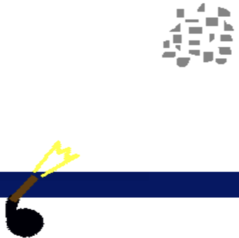

구현 기능
|  |
권총 사격 기능 다가오는 좀비를 클릭하면 권총을 쏴서 해당 좀비를 제압합니다. 이렇게 해서 좀비가 맨 밑으로 다가오는 것을 막을 수 있습니다. |
|
스킬 사용 기능 일정 시간이 지나서 스킬 게이지가 꽉 차면 스킬을 사용해서 좀비들을 모조리 제압할 수 있습니다. |
|
|
좀비가 다가오는 기능 좀비들이 밑으로 다가갑니다. 만약 맨 밑으로 도달하면 라이프가 소모됩니다. |
배경과 목적
고등학교에서 교내 Scratch 대회가 오픈한 적이 있습니다. 창의적인 게임을 만들어서 사람들한테 서비스를 제공하기 위해, 게임 개발자가 될 것에 대비하기 위해 저만의 게임을 제작해서 출품하게 되었습니다.
고등학교에서 교내 Scratch 대회가 오픈한 적이 있습니다. 창의적인 게임을 만들어서 사람들한테 서비스를 제공하기 위해, 게임 개발자가 될 것에 대비하기 위해 저만의 게임을 제작해서 출품하게 되었습니다.
배운 점
- Scratch로 게임을 구현하는 법을 알게 되었습니다.
진행 절차
- 도서관에서 Scratch 책을 빌려서 필요한 예제들만 골라서 실행하였습니다.
- Scratch 책에 있는 예제들을 참고해서, 좀비를 클릭해서 제압하는 것, 좀비가 벽까지 다가오면 라이프를 감소하는 것, 스킬 게이지가 조금씩 올라가는 것 등 필요한 것을 조금씩 구현해 나갔습니다. 사실, 순수 프로그래밍으로 게임을 만드는 것은 처음이라서 고민을 많이 하였습니다.
- 지금까지 구현한 것들을 합친 후 코드를 수정하였습니다.
- 이렇게 해서 원하는 프로그램을 구현할 수 있었습니다.
역량 강화를 위해 가장 노력한 점
Scratch로 창의적인 게임 제작
Scratch로 창의적인 게임 제작
전체 구조

사용 기술
Scratch
Scratch
개발 환경
Scratch
Scratch
부연 설명
- 2011년 군포e비즈니스고등학교 스크래치 대회에 출품해서 우수상을 받았습니다.
- 소스 코드